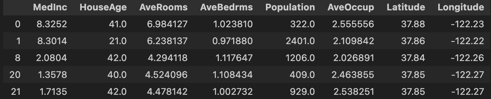
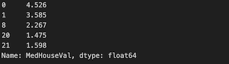

Tutorial (1/2)
This is the part 1 of our tutorial. It explains how to prepare data and launch AntakIA. Those steps are common to most of AntakIA uses. If you feel familiar enough, you can directly jump to the second part.
The California housing dataset
We'll use the California housing dataset, very famous in the datascience ecosystem.
This dataset describes 20 640 block groups (ie. groups of houses) in California using 8 variables :
| Variable | Description |
|---|---|
| MedInc | median income in block group |
| HouseAge | median house age in block group |
| AveRooms | average number of rooms per household |
| AveBedrms | average number of bedrooms per household |
| Population | block group population |
| AveOccup | average number of household members |
| Latitude | block group latitude |
| Longitude | block group longitude |
The dataset also gives for each block group the average price of a house. This data comes from real real estate transactions.
In our noteboox, this dataset is stored in a Pandas Dataframe named X.
If you type X.head() you'll get :

The "medium house values" are stored in a Pandas Series named y.
A y.head() will give you somethin like :

The use case
We can imagine several use cases where AntakIA could be very useful. For instance :
- Let's say you're a real estate agent in California. A data scientist in your team has trained a wonderful ML model that is capable of predicting the market value of any house in the state, as long as you provide sufficient data. You're amazed by the result and want to understand how this model works in order to gain insights of your market : what drives the price ? any segmentation ? So you decide to use AntakIA.
- Or, you don't have such model. But you still want to have an accurate understanding of your market. Then you ask a data scientist to train a model. And then you use AntakIA on it.
It's quite the same story : you have a dataset X, you do a supervised training on (X,y) to get a fitted model M. AntakIA will help you understand how and why M can predict house values.
Preparing the data
Open the file california_housing.ipynb (in the examples folder of the code, or wherever you downloaded it)
Let's analyze the first cells :
import pandas as pd
df = pd.read_csv('../data/california_housing.csv').drop(['Unnamed: 0'], axis=1)
We start creating a dataframe from a local CSV file. You could have imported this dataset from the Scikit-learn package here. As you'll see, AntakIA needs to compute other values (eg. SHAP values for the data and the model). So as to make this tutorial quicker and more pleaseant, our CSV file includes pre-computed SHAP values.
# Remove outliers:
df = df.loc[df['Population']<10000]
df = df.loc[df['AveOccup']<6]
df = df.loc[df['AveBedrms']<1.5]
df = df.loc[df['HouseAge']<50]
# # Only San Francisco :
df = df.loc[(df['Latitude']<38.07)&(df['Latitude']>37.2)]
df = df.loc[(df['Longitude']>-122.5)&(df['Longitude']<-121.75)]
In the same way, the previous lines are not compulsory. But it appears that the dataset for the sole city of San Francisco is better to get rapidly a good intuition of how AntakIA works.
X = df.iloc[:,0:8] # the dataset
y = df.iloc[:,9] # the target variable
shap_values = df.iloc[:,[10,11,12,13,14,15,16,17]] # the SHAP values
Above, we have extracted from our big CSV dataset : the X values, the y Series and the shap_values (we'll explain those values further).
from sklearn.ensemble import GradientBoostingRegressor
model = GradientBoostingRegressor(random_state = 9)
model.fit(X, y)
We decided to use a GradientBoosting model and have it trained (or fitted) on our data. Now our data is prepared and our model trained, we can then launch AntakIA :
from antakia.antakia import AntakIA
atk = AntakIA([X], y, model)
atk.start_gui()
It's that simple !
Yet, in this tutorial we'll use another method to launch AntakIA :
from antakia.antakia import AntakIA
variables_df = pd.DataFrame(
{'col_index': [0, 1, 2, 3, 4, 5, 6, 7],
'descr': ['Median income', 'House age', 'Average nb rooms', 'Average nb bedrooms', 'Population', 'Average occupancy', 'Latitude', 'Longitude'],
'type': ['float64', 'int', 'float64', 'float64', 'int', 'float64', 'float64', 'float64'],
'unit': ['k$', 'years', 'rooms', 'rooms', 'people', 'ratio', 'degrees', 'degrees'],
'critical': [True, False, False, False, False, False, False, False],
'lat': [False, False, False, False, False, False, True, False],
'lon': [False, False, False, False, False, False, False, True]},
index=['MedInc', 'HouseAge', 'AveRooms', 'AveBedrms', 'Population', 'AveOccup', 'Latitude', 'Longitude']
)
atk = AntakIA(X, y, model, variables_df, shap_values)
atk.start_gui()
Two differences with this method :
-
we've passed to AntakIA a description of the dataset variables :
- description
- is it critical ?
- do we have geographical data ?
- type of the variable
- which unit is used ?
-
we've also passed pre-computed Shap values.
Now we're ready to discover AntakIA. You can go to the second part of our tutorial.